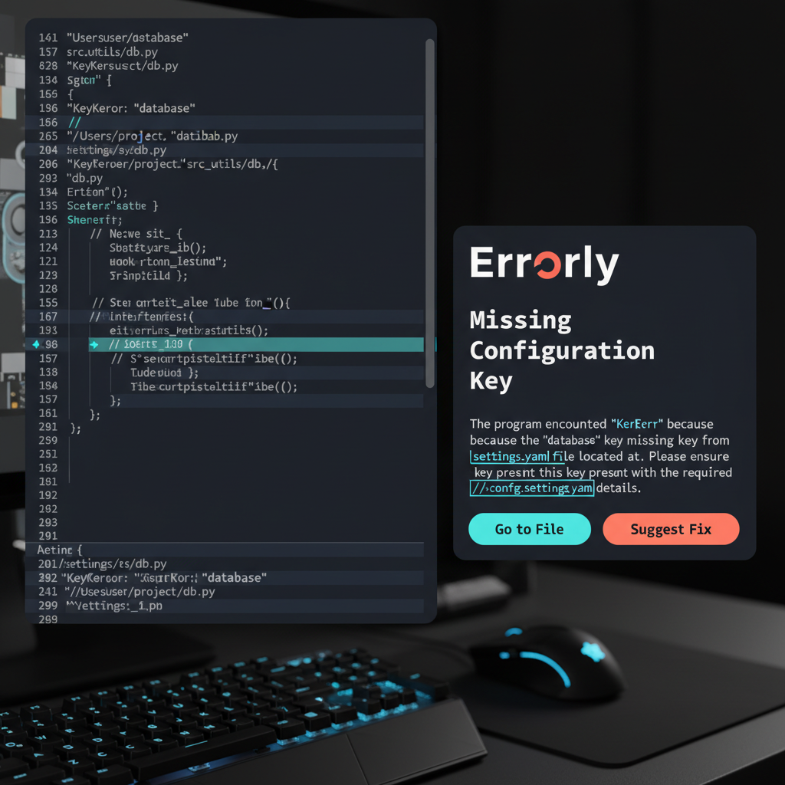

Errorly finds the root cause of Python errors by reading your local config, .env variables, and cross-file dependencies. No more StackOverflow rabbit holes.

Generic AI misses context. Errorly maps your specific logic.
Identifies when a KeyError in your view is actually caused by a missing field in a YAML config 5 directories away.
Specifically indexes .env, pyproject.toml, and Dockerfiles to spot version mismatches instantly.
Generates root-cause resolutions tailored to your business logic, not just generic syntax suggestions.
One-line setup in your terminal.
pip install errorly
Errorly indexes your project and local environment.
errorly analyze traceback.log
Receive a verifiable code change and explanation.
"Finally, an AI that understands my actual project structure instead of just guessing from the traceback."
Join 100+ Python developers in our private beta. Launching 2026.